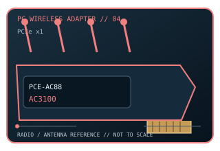

[ MODEL-SPECIFIC PC WI-FI HARDWARE ]
ASUS PCE-AC88 AC3100 4×4 PCIe Wi-Fi Adapter
Four-stream dual-band 802.11ac desktop adapter with a remote four-antenna base. This record documents the named model and its labeled revision scope; it is not a claim that similarly named variants share identical drivers or radio limits.

IDENTIFICATION: Match the full product name, model label and hardware revision with its manufacturer page before choosing a driver. Regional channel and OS support can vary.
Dedicated wireless specifications
| Cataloged product | ASUS PCE-AC88 AC3100 4×4 PCIe Wi-Fi Adapter |
|---|---|
| Wi-Fi generation / standards | Wi-Fi 5 (IEEE 802.11ac Wave 2); also supports 802.11a/b/g/n. ASUS NitroQAM/1024-QAM modes require compatible ASUS peer equipment. |
| Radio bands, channels & width | 2.4 GHz and 5 GHz. Standard 20/40 MHz channel widths at 2.4 GHz and up to 80 MHz at 5 GHz; channel plan is region-specific (typical U.S. examples 1–11 and 36–165, with DFS restrictions). |
| Spatial streams / nominal link rates | 4×4 MIMO; ASUS lists up to 1,000 Mb/s at 2.4 GHz and 2,100 Mb/s at 5 GHz with NitroQAM-capable peers (AC3100 combined class, not measured throughput). |
| Host interface | PCI Express x1 host card; no Bluetooth radio or motherboard USB lead. |
| Antenna arrangement | Four detachable external antennas supplied with extension cables and magnetized antenna base. |
| Operating-system compatibility | ASUS support downloads identify Windows 7 and Windows 10 utility/driver support; verify a matching driver for the target Windows build before deployment. |
| Bluetooth | Not included. |
| Regulatory channel note | Dual-band 2.4/5 GHz only. The 5 GHz channel set is limited by region and DFS rules. |
Model-specific installation notes
The top NitroQAM rate is vendor-specific modulation, and full 4×4 operation requires a matching multi-stream access point. Treat the class rate as a PHY maximum, not application performance.
4 external antennas are shown in this model’s source documentation. Install only with the correct host connector and driver package; antenna placement, local regulation and access-point capabilities affect operation.
Manufacturer sources
- ASUS PCE-AC88 product specificationsOfficial manufacturer source for product specifications, revision-specific software, or compatibility requirements.
- ASUS PCE-AC88 support and operating-system downloadsOfficial manufacturer source for product specifications, revision-specific software, or compatibility requirements.
Source pages may describe a hardware family or provide revision-selected downloads. Manufacturer regional restrictions and current OS support take precedence over generic interface fit.